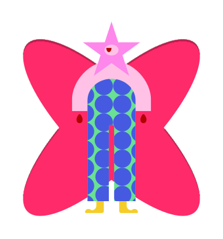
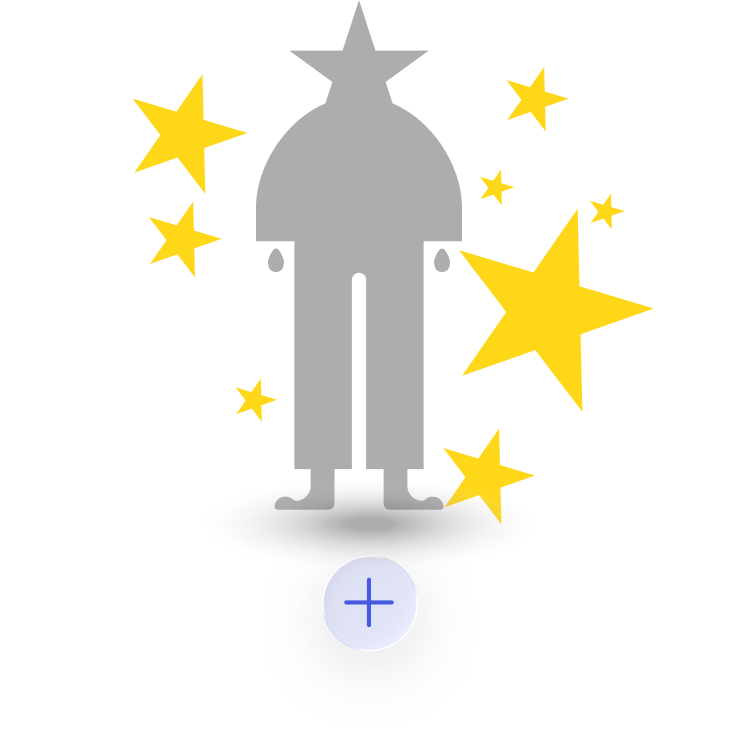
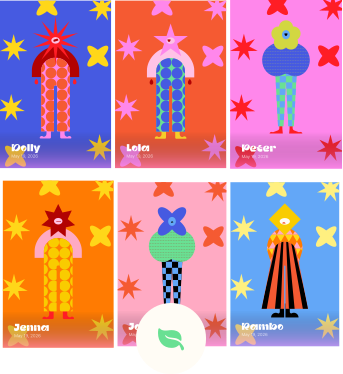
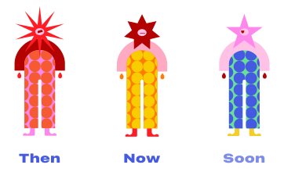
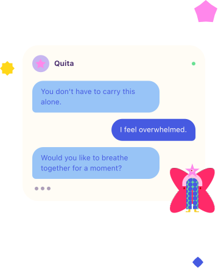

Seed
It’s something new or small, but it still deserves care.

STEP 1 - START
Turn what you're feeling into a Quita, a small doll that holds your thoughts for you.
You don't have to carry it alone.

STEP 2 - CREATE
Tap the + button to create a new Quita.
This is where it begins.
It’s something new or small, but it still deserves care.

It’s causing some tension and making things feel a bit tangled right now.

It’s heavy, exhausting, and it’s been taking too much of your energy.
STEP 3 - QUIZZ
Answer a few simple questions. This helps shape your Quita.

STEP 4 - KEEP THEM SAFE
All your Quitas live in your Vault. Tap any doll to add a new progress, or tap the leaf for more to explore calming tools

STEP 5 - GROW
As your feelings change, your Quita changes too. Tense shapes slowly soften into calmer forms, turning emotional progress into something you can see.

STEP 6 - GROW
Whenever you need support, Quita is here to guide you through calming tools, reflections, and gentle conversations.
STEP 7 - READY
To release your Quita, tap the sun or the “Let your Quita rest” button. Resolved Quitas drift into your Bliss - a quiet space of relief.